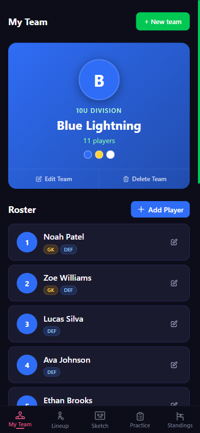
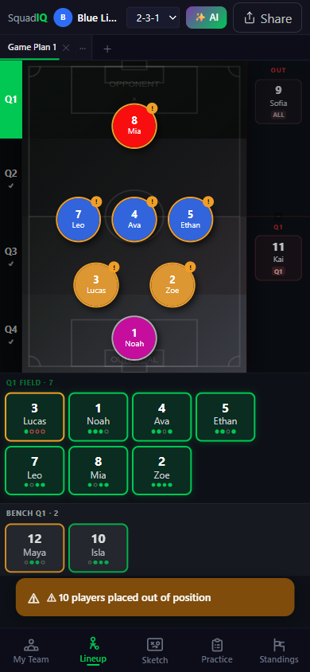
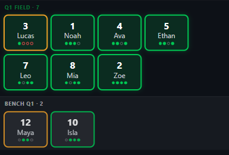
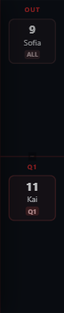
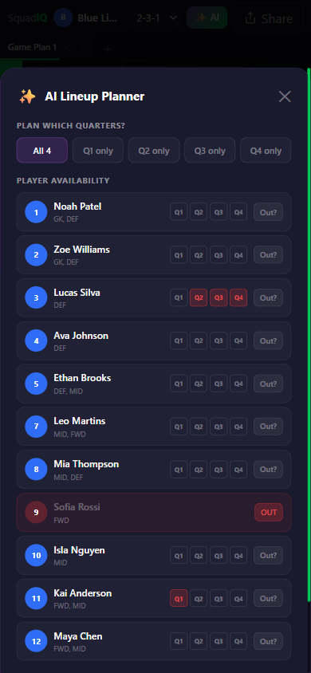
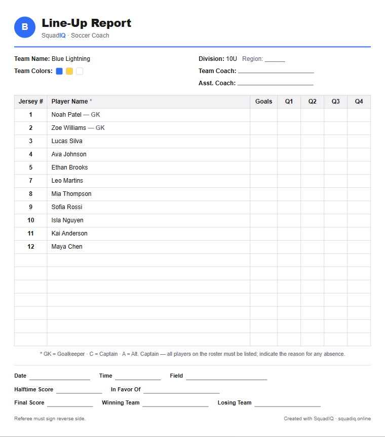
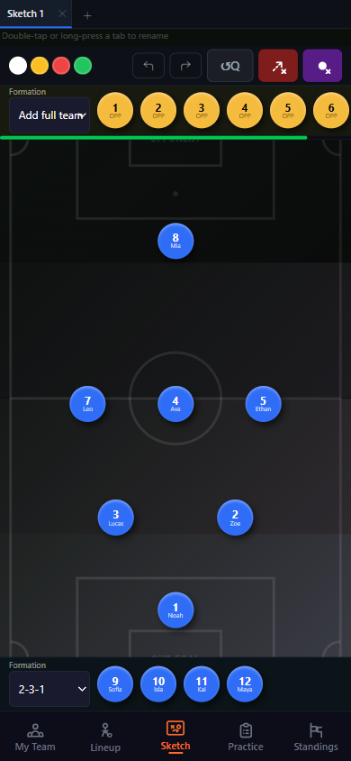
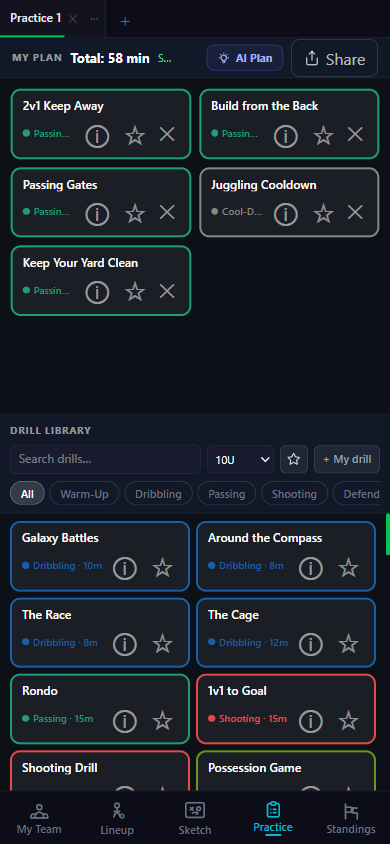

Build your roster
Everything else in SquadIQ is powered by the players you add here, so start on this tab.
- Tap “Add Player” to add each kid — give them a name, jersey number, and the positions they can play (GK, DEF, MID, FWD).
- Rate each position 1–5 stars. The stronger you rate a player at a spot, the more the AI Lineup will lean on them there.
- Set the team colors when you create the team — they carry through to the field, sketch board, and shared images.
- Run more than one team? Tap the team name at the top to switch between up to four teams on the same account.
- Tap any player to edit or remove them later.
- Share & backup: scroll down for “Export roster CSV” (open your roster in a spreadsheet), a printable Roster sheet (PDF) — the same line-up report as in Lineup (below) — and a full data backup of every team, player, and plan.

Plan your four quarters
Pick a formation, let the AI build a fair four-quarter plan, then tweak anything by dragging. This is where most of game-day prep happens.
- Choose a formation from the dropdown at the top — the options change to fit your division’s team size.
- Tap “✨ AI” to auto-build all four quarters. It rotates the goalkeeper, spreads playing time, and respects who’s available.
- Switch quarters with the Q1–Q4 buttons down the side to see and edit each one.
- Drag any player onto a spot to override the AI — swap two players by dropping one onto the other.
- Tap “Share” for three exports: Save as image, Export as PDF, and the printable Roster sheet (below).


Reading a player card
Under the field, every player shows a card with a colored outline and four little dots — one per quarter. It tells you their playing time at a glance:
Green outline = playing 3 or more quarters — the “everybody plays” goal is met. Orange outline = only 1–2 quarters so far, a nudge to give them more time. A faint outline means they’re not on the field this quarter yet.
The dots fill in for each quarter the player is on the field, so you can see their whole game at a glance.

Benching a player — the OUT area
The red strip on the right of the field is where you park players who aren’t playing. It has two zones:
OUT (badge “ALL”) — drag a player here when they’re out for the entire game (sick, no-show, injured). They’ll sit out every quarter.
Q1 / Q2 / Q3 / Q4 — the lower zone benches a player for just the quarter you’re viewing. Great for a late arrival or a one-quarter rest.
Drag them back onto the field or bench any time to bring them back in. You can also set all of this up ahead of time in the AI planner below.
The AI Lineup Planner
- Mark availability first. For each player you can toggle individual quarters off, or tap “Out?” to sit them the whole game.
- Pick which quarters to plan — all four at once, or regenerate a single quarter.
- Tap “✨ Generate Lineup” and the field fills in instantly. Anyone kept under three quarters is flagged so you can even it out.


Print a line-up sheet
From Share → Roster sheet (print & PDF) — or the Roster sheet (PDF) button in My Team — you get a clean, printable line-up report, the kind refs ask for at the field. It downloads as a PDF you can print or hand in.
It’s laid out on a white background to save ink, with your team name, division, and colors already filled in and every player listed (goalkeepers marked GK). The Goals and Q1–Q4 columns are left blank so you can mark subs and scorers by hand during the game, plus fill-in lines for the coaches, date, field, and final score.
Draw a play
A tactical board that works on your phone — show a run, a set piece, or where everyone should stand.
- Drag the player tokens (your team and the opponents) anywhere on the field.
- Tap “Add full team” to drop a whole formation onto the field at once, then adjust.
- Switch to the Arrows tool to draw runs and passes; use the swatches to change color.
- Undo / redo anything, or hit Reset to clear the board.
- Keep several boards in the tabs up top — double-tap a tab to rename it (“Corner kick”, “High press”…).

Build a session
A library of ready-made drills you can drop into a plan — or let the AI assemble a balanced session for you.
- Drag a drill from the library up into “My Plan” to add it. The total time updates as you go.
- Filter the library by category — Warm-Up, Dribbling, Passing, Shooting, Defending, Teamwork, Cool-Down — or search by name.
- Tap “AI Plan”, choose a length and a focus, and it builds a full session for you in seconds.
- Tap the ⓘ on any drill for setup, diagrams, and coaching points.
- Add your own drills with “+ My drill”, and keep multiple plans in the tabs up top.
- Tap “Share” to export the finished session as an image or PDF to hand out at practice.

Track the table
Pull your league table straight into the app so you’re not fighting a clunky website at halftime.
- Paste your league URL from MatchTrak or TeamSideline and tap Add — SquadIQ reads the table for you.
- Tap a row to highlight your team so it’s easy to spot in the standings.
- Add multiple tabs for different divisions — a sibling’s team, a rival group — and rename each one.
- It refreshes on its own every few hours, or tap Refresh right after a game to pull the latest.